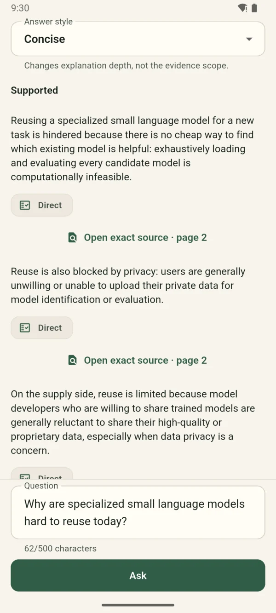

摘要 · Abstract
上下滑动切换上一篇或下一篇。每张卡片都是真实的 arXiv 记录，原文永远只差一次点击。
上下滑动换论文，左右滑动换深度。没有别的要学。
上下滑动切换上一篇或下一篇。每张卡片都是真实的 arXiv 记录，原文永远只差一次点击。
向左滑。Pakperk 读取 PDF 的真实结构，把引言重新排成适合手机的版式。只有你真正进入这个阶段时才会开始解析，划过卡片不会触发。
再向左滑。引言所依赖的参考文献，每条都说明它为什么重要，并链接回原始工作。
让一篇论文在手机上真正可读的两个阶段：作者写下的那节引言，以及你向它提问时拿回的东西。


以上为 Android 设备实拍截图，论文为 arXiv:2505.13425。
在地铁上、排队时、单手就能翻的阅读器——网络不给力的时候也不会乱。
把论文存进待读列表。改动立刻在本机生效，联网并登录后自动同步。移除时提供撤销。收藏本身不会触发论文解析。
Pakperk 先打开缓存或内置的元数据，不等请求返回，然后就地刷新。它记得你停在哪一篇、哪个阶段、滚到哪个位置。
登录会打开系统浏览器，走服务自己的身份提供方。Pakperk 从不在 App 内索要账号密码，访问令牌只存在内存里，不落盘。
每篇论文都保留精确的 arXiv 标识和指向原始记录的链接。Pakperk 只是读 arXiv，与 arXiv 没有隶属关系，也不打算替代原文。
游客阅读不需要账号。运行遥测不包含论文正文、提示词、对话内容、用户名和邮箱。不读通讯录，不要精确位置，没有广告标识符。
每个滑动手势都有带文字标签的替代操作。浅色与深色主题、减弱动效、大号字体、读屏语义、键盘焦点和系统返回，都是基线的一部分。
刻意收窄的技术栈，让阅读循环够快，让服务器够无聊。
私测版 Android 安装包，由服务运营者直接发布。目前还没有应用商店上架。
Android 7.0（API 24）及以上，且为 64 位 ARM 设备（arm64-v8a）——近几年的主流手机都是。这个包不含 32 位引擎；鸿蒙 NEXT 无法安装 APK。
浏览器或文件管理器会要求你允许安装来自此来源的应用；该权限是按应用授予的，装完可以收回。如果机器上已装过用不同签名的 Pakperk，需要先卸载。
这个版本连的是私测服务器，不是正式服务。账号和待读列表是开的，公开讨论是关的。数据是测试数据，偶尔会停机。
安装前比对一下。文件哈希：
155d34e9a1748f56494d9a8c6749f22cd5e78b6e0e9f92c08e013519d048e08b
签名证书（SHA-256）：
fcf345e1a6d4e5d9579f4125ec48d88dc8b7041b20a908ca1f31df358a3d8cd3
在 Mac 或 Linux 上：
shasum -a 256 pakperk-0.2.0-dev.apk